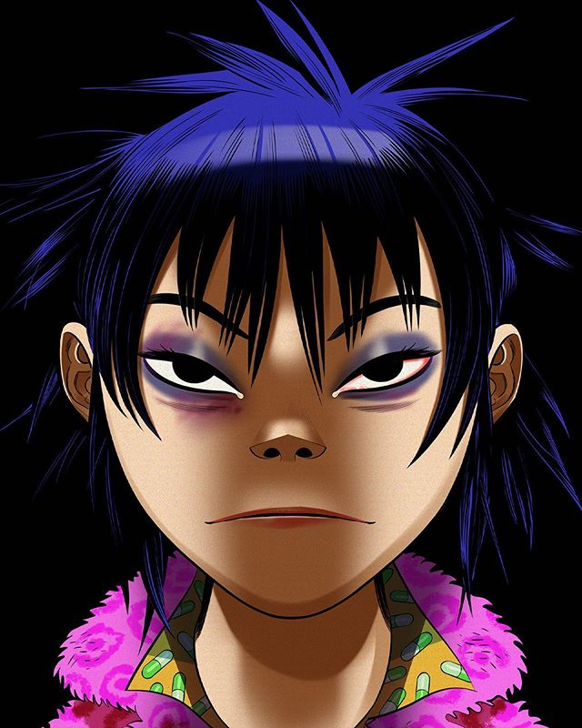

Gorillaz es una banda británica creada en 1998 por Damon Albarn y Jamie Hewlett. La banda utiliza cuatro personajes ficticios los cuales son: 2-D, Noodle, Murdoc Niccals y Russel Hobbs. Su nombre tiene un motivo, se debe a que sus creadores nacieron, según el calendario chino, en el año del mono.
En su inicio vendieron más de 6 millones de copias del álbum “Gorillaz”. Gracias a esto tuvieron una entrada al libro Guinnes de los Récords como la banda virtual más exitosa.
Sus siguientes álbumes fueron “Demon Days” en 2005, “The Fall” y “Plastic Beach” en 2010. Con este último álbum también consiguieron un record. Tuvieron más de 900 mil reproducciones en YouTube con su video “Stylo” en las primeras 24 horas.
Jamie Hewlett alguna vez mencionó que “si alguien mira MTV durante demasiado tiempo, podrá darse cuenta que es como el infierno, porque no hay nada entretenido allí”. De ahí surgieron las ganas de crear una banda de dibujos animados. En esos tiempos cuando YouTube no existía.
Los personajes principales se han usado para portadas de discos, conciertos, carteles y más.
Miembros
Stuart Harold Pot ("2-D") (Crawley, Reino Unido, 23 de mayo de 1978) es un personaje ficticio y vocalista principal de la banda virtual, Gorillaz. Fue creado por Damon Albarn y Jamie Hewlett.
De carácter amable pero muy torpe, inocente y distraído. Se caracteriza sobre todo por su extraño pelo azul el cual fue causado después de caer de un árbol y perderlo, por lo cual, volvió a crecer de este color, y sus ojos completamente negros causados por un accidente que tuvo con Murdoc Niccals lo cual hizo que se acumulara sangre en su ojo, quien lo unió a la banda por su increíble voz y su aspecto, increíblemente tierno, sabiendo que era una completa atracción para las chicas. Es además quien interpreta las letras de las canciones.
Murdoc Niccals (6 de junio de 1966) es un personaje ficticio, bajista, creador y líder absoluto de la banda virtual Gorillaz. Fue creado por Jamie Hewlett y Damon Albarn, siendo dejado como un recién nacido en la puerta de su padre Sebastián Niccals. Su infancia sería bastante complicada debido a los abusos de su padre, que lo obligaba a cantar en sucios bares para obtener dinero vestido con disfraces ridículos. Esto, además del maltrato de sus compañeros de escuela, terminaría moldeando el difícil carácter que el satanista desarrollaría cuando adulto. Fue durante esa época que nació su amor por la música, más específicamente el Heavy metal. Así fue como se decidió que seria una gran estrella de rock para poder huir de su mugrienta ciudad. Además de aprender a tocar el bajo, comenzó su fanatismo por el satanismo haciendo pactos para poder obtener fama y fortuna.
Murdoc pasaría por muchas bandas que nunca lograrían llamar la atención, mientras mantenía diversos empleos para obtener dinero. Harto de todo, decidió que crearía la banda de música perfecta y que arrasaría con todas las listas de éxitos. Solo necesitaba los compañeros perfectos.
Russel Hobbs (Nueva York, 3 de junio de 1975) es un músico ficticio estadounidense y miembro de la banda virtual Gorillaz. Expresado por Remi Kabaka Jr. Fue creado por Damon Albarn y Jamie Hewlett.
Se encuentra a cargo de la batería y en ocasiones de la voz. Fue el primero en hallar a Noodle, a quien también le tradujo algunas palabras al inglés mientras ella aún hablaba sólo japonés.
Hasta en 2005, estuvo poseído por un difunto amigo llamado Del, quien en ocasiones tomaba control de su cuerpo y colaboraba en diferentes canciones. Russel es un experto en la batería y un gran amigo pero de carácter muy fuerte cuando se necesita. Tiene un cerdo como mascota y una muy buena relación con Noodles, y no odia a 2-D como algunos creen. Sus influencias son, Gengis Kan, Tupac Shakur.
En Plastic Beach, aparece de un tamaño gigantesco, debido a la basura y los residuos ingeridos en su viaje a través del océano hasta Plastic Beach. Su voz original es Remi Kabaka Jr.
Noodle (31 de octubre de 1990) es un personaje ficticio y guitarrista de la banda virtual Gorillaz. Fue creada por Jamie Hewlett y Damon Albarn. Llegó a la banda siendo una niña muy pequeña sin recordar nada de su pasado, y obtuvo el puesto por ser una excelente guitarrista. De carácter tranquilo y muy inteligente, es la persona más normal en el grupo y la voz de la razón, por lo que los demás le tienen mucho respeto.
Además de talentosa compositora y artista marcial, es quien generalmente está detrás de todo el proceso artístico de los discos (aunque Murdoc siempre le robe todo el crédito).
Es junto a 2-D uno de los miembros más entrañables y reconocibles de la banda.

Albúnes
Gorillaz
Gorillaz es el primer álbum de la banda virtual del mismo nombre "Gorillaz". Fue lanzado en marzo de 2001 por Parlophone internacionalmente y por Virgin Records en los Estados Unidos.
E incluye los sencillos "Clint Eastwood", "19-2000", "Rock the House" y "Tomorrow Comes Today". El álbum alcanzó el tercer puesto en el Reino Unido y el puesto 14 en los EE.UU, vendiendo 7 000 000 de copias en todo el mundo en el 2007, y el grupo entró en el El libro Guinness de los récords por la banda virtual más exitosa del mundo.
Demon Days
Demon Days es el segundo álbum de la banda británica Gorillaz, lanzado el 11 de mayo de 2005 en Japón y el 23 de mayo del mismo año en el Reino Unido y Estados Unidos, fue grabado en 2004 en Kong Studios. Demon Days debutó en Reino Unido en la posición #1,1 mientras que en Estados Unidos se colocó en la posición #6,2 teniendo un éxito mayor que su álbum anterior, Gorillaz , vendiendo más de 8 millones de copias en el mundo.
El sencillo líder del álbum, "Feel Good Inc.", se convirtió en el éxito más grande de la banda, posicionándose en #2 en Reino Unido y #14 en Estados Unidos.3 El segundo sencillo, "Dare", fue un gran éxito también, dándole a la banda su primer sencillo en #1 en Reino Unido.
Plastic Beach
Plastic Beach es el tercer álbum de estudio de Gorillaz. Con un estilo menos oscuro que el segundo álbum de Gorillaz Demon Days, Plastic Beach reúne artistas de todos los estilos desde el punk rock hasta el rap, con artistas como los exintegrantes de The Clash, Mick Jones y Paul Simonon, otros como Lou Reed, Mos Def, la Sinfónica ViVA, Snoop Dogg, De La Soul, Bobby Womack, Mark E. Smith, Bashy, Kano, Little Dragon, y el Hypnotic Brass Ensemble.
The Fall
The Fall es el cuarto álbum lanzado por la banda virtual británica Gorillaz, con un estilo más electrónico y más oscuro. El álbum fue oficialmente lanzado el 20 de diciembre de 20101 y poco después lanzado el 25 de diciembre de 2010 como una descarga gratis en el sitio web de Gorillaz, exclusivamente para el "club de fans" de la banda, Sub-divsion.
El álbum entero fue grabado y editado en el IPad del fundador del grupo, Damon Albarn, durante la etapa estadounidense de la gira "Escape To Plastic Beach" en octubre de 2010.
El vídeo musical de Phoner to Arizona, una recopilación de material de archivo e imágenes tomados de la gira y la etapa, fue publicado en YouTube el 22 de diciembre de 2010.
Gorillaz confirmó la versión física para el 18 de abril de 2011; y dos singles para el 14 de marzo, los cuales son Revolving Doors y Amarillo.